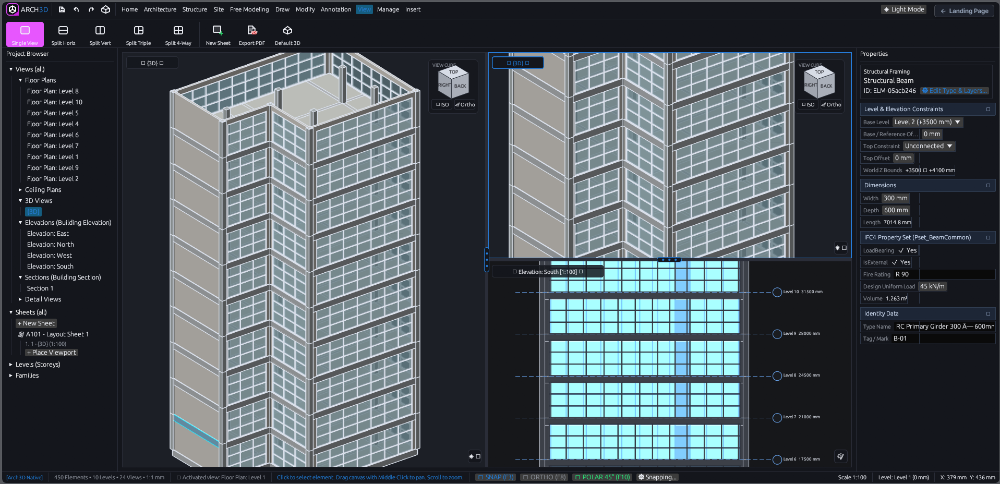
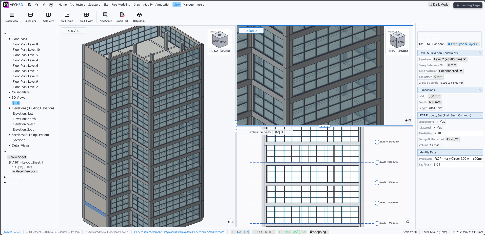
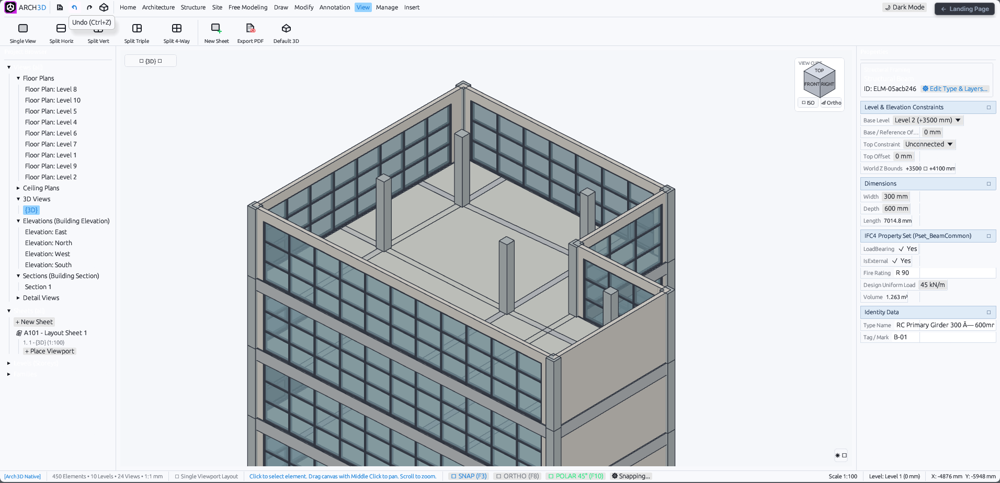
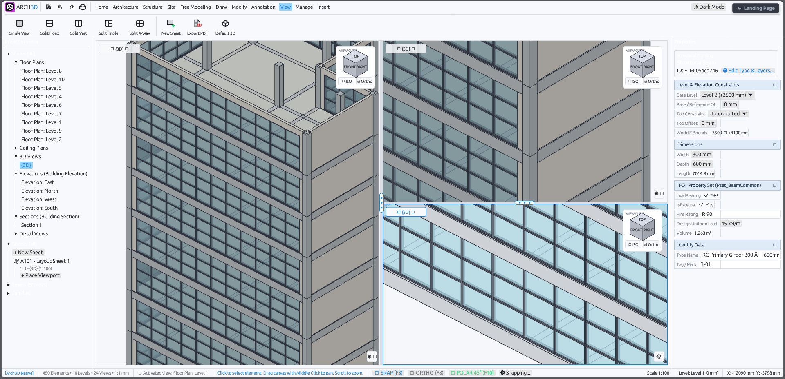

Arch3D is a fast, lightweight BIM authoring platform powered by a pure Rust engine and hardware-accelerated OpenGL 3D viewports at 1:1 millimetre scale. Built from clean-room open specifications without reverse engineering or decompilation of proprietary software, it reads .dwg/.dxf via acadrust, SketchUp .skp via openskp, and supports openBIM IFC schemas (IFC2x3, IFC4, & IFC4x3). The core application is free to use, with optional plugins planned for advanced workflows.
A familiar ribbon layout, structured project tree, high-speed multi-viewport panes, and real-time parameter inspectors.

Independent multi-viewport panes displaying simultaneous 3D axonometric, zoomed framing detail, and building elevation views with live IFC4 property inspector.

Dynamic South Elevation with real-world level datums (Level 6 to 10), synchronized 3D perspective views, and comprehensive structural girder property editing.

True 1:1 mm watertight reinforced concrete columns, penthouse roof deck openings, perimeter parapets, and translucent glazed curtain wall facades.

Multi-pane detail inspection of solid metallic mullion boxes, double-glazed curtain wall panels, and analytical beam-to-column joint cuts.
No bloated enterprise setup, no cloud mandates, and no forced subscriptions. Just fast, dependable architectural tools with a free core.
Engineered in pure Rust with no heavy background runtimes. Launches in under a second, stays responsive with large models, and runs smoothly on ordinary laptops.
Standard ISO 10303-21 IFC4 export and import for walls, slabs, columns, and beams. Easily share models with engineers and consultants without vendor lock-in.
Hardware-accelerated 3D viewports with multi-pane layouts (Plan, Elevation, Section, 3D). Orbit and inspect multi-storey buildings with clean solid geometry and visual styles.
Clean magnetic snaps to endpoints, wall centerlines, grid intersections, and opening jambs. Drafting feels natural, predictable, and accurate right out of the box.
Directly import 2D DWG/DXF drawings and 3D SKP models. Automatically converts CAD layers into native walls, slabs, and drafting linework without extra converter tools.
Dedicated sheet desk with free viewport placement and corner resizing. Arrange drawings at standard scales (1:50, 1:100, 1:200) and export crisp vector PDFs ready for printing.
Aligned with the American Institute of Architects (AIA G202) and BIMForum Level of Development framework, Arch3D bridges conceptual authoring with exact 1:1 millimetre construction coordination.
Arch3D operates at LOD 300 (Specific Assemblies & Precise Quantities) and LOD 350 (Inter-System Interface Coordination). All architectural and structural elements are generated as true 1:1 millimetre watertight solids with analytical joint miter cuts, automated opening reveals, beam-to-column trimming, and complete IFC4 standard property sets.
Watertight 6-sided solid prisms for walls, columns, beams, sloped roofs, stairs, ramps, and footings.
Multi-layer wall and floor assemblies with customizable layer functions, thicknesses, and live thermal U-values.
Mitered wall corner joins, beam-to-column boundary trimming, hosted curtain wall cutouts, and inner-bay slab alignment.
Complete standard IFC Psets (Pset_WallCommon, Pset_BeamCommon, etc.) and real-time multi-view synchronization.
Model elements represented as generalized mass volumes, overall area boundaries, orientations, and height limits.
Generic model elements with approximate dimensions, locations, unconnected heights, and generic placeholder profiles.
Elements modeled as exact, specific assemblies with accurate 1:1 scale mm geometry, multi-layer compound materials, and IFC classifications.
Elements modeled with accurate boundary conditions, structural connections, trims, and geometric coordination with adjacent systems.
Detailed shop geometry, rebar reinforcement cages, fabrication tolerances, steel connection plates, and CNC export.
Field-verified as-built conditions with operational asset telemetry, maintenance lifecycle data, and facility management exchange.
A transparent breakdown of production-ready features currently running in Arch3D v0.1.0 alongside features under active development and upcoming roadmap milestones.
Walls, Columns, Beams, Slabs, Roofs (Hip, Gable, Shed, Flat), Stairs, Ramps, Railings, Curtain Walls, Doors, Windows, Ceilings, Footings, Site Toposolids, Property Lines, Building Pads, and Freeform Solids.
Mitered wall corner footprints, beam-to-column analytical ray trimming, bay slab inner-face beam attachments, and hosted curtain wall hole cutouts.
Configurable compound layers with individual functions (Structure, Substrate, Thermal/Air, Finish 1, Finish 2), live thickness tracking, and automatic thermal U-value computation.
Floor Plans (1200mm cut plane with door swings & window reveals), Reflected Ceiling Plans (RCP 600x600 grid), Elevations (N, S, E, W), Arbitrary Building Section cuts, and Axonometric 3D.
Pure OpenGL hardware depth testing with 4x MSAA, directional sunlight shading, polygon offset silhouettes, and translucent glazing passes.
Compliant buildingSMART IFC4 data model with standard Psets (Pset_*Common) and spatial structure containment.
Direct binary CAD and SketchUp mesh import with automatic conversion to native BIM walls, slabs, and freeform solids without third-party proprietary SDKs.
Real-time socket bridge streaming to Blender Cycles/EEVEE and browser-based WebGPU path tracing studio with glTF 2.0 Binary (.glb) export.
Free viewport positioning, 4-corner resizing, standard scale viewports (1:50, 1:100, 1:200), and crisp vector PDF production.
Endpoint, Midpoint, Perpendicular, Center, Nearest, Ortho, Polar tracking (15°/30°/45°), Multi-Storey copy/paste, and automated structural bay framing.
Windows x64 and WebAssembly (in-browser) are fully operational. Automated cross-compilation pipeline for native macOS (Apple Silicon/Intel) and Linux (.deb / AppImage) is currently undergoing CI verification.
Plugin UI manager and bundled extension bridges are complete. Dynamic runtime execution of external third-party compiled .wasm modules is actively being finalized.
Live material volume, surface area, and linear takeoffs exist in the property grid; automated tabular CSV and Excel schedule report generation is in development.
Detailed 3D rebar cages, stirrups, column ties, and bar bending schedule tables will be introduced via specialized structural extension modules.
Parametric fabrication detailing for steel beam-to-column connections, baseplates, anchor bolts, and gussets.
Parametric ductwork, pipe routing, electrical trays, and HVAC equipment families are not yet present in core v0.1.0.
Arch3D currently operates as a fast, autonomous standalone desktop/web app with local file persistence. Central model multi-user server checkout is planned for future collaborative tiers.
GPU out-of-core point cloud streaming for as-built renovation modeling and field verification.
The core Arch3D application remains free and open, with an upcoming plugin system designed for specialized professional workflows.
Advanced analytical framing, automatic rebar scheduling, and structural calculation reports tailored for engineering practice.
Real-time physically based path tracing powered by WebGPU, OpenPBR materials, and Intel OIDN denoising. Installable and reversible via the built-in Plugin Manager.
Automated Bill of Quantities (BOQ), material volume schedules, and cost databases directly linked to BIM model geometry.
Connect with architects, engineers, and contributors building an open, unencumbered BIM ecosystem.
Watch BIM authoring walkthroughs, feature demonstrations, and algorithmic deep-dives on @OpenSourceArchitecture.
Share ideas, discuss feature requests, and follow architectural modeling RFCs with developers and architects worldwide.
Submit real-world IFC, DWG, and SKP test models to help expand compatibility and optimize parsing algorithms.
Advancing openBIM ISO 10303-21 data transparency so architects always maintain 100% ownership of their project files.
Combining real-world architectural practice with AI-assisted software development to build fast, practical tools for the profession.
Architect and independent software developer based in the Philippines, building tools with modern AI coding assistance. Arch3D was created to provide a fast personal BIM tool tailored for real practice. The core application is free for everyone, with specialized professional plugins planned in the future.
Arch3D is developed as open-source software for the global AEC community. Voluntary contributions and sponsorships directly fund continuous development, IFC4 certification testing, and cross-platform native builds.
Support ongoing monthly development and continuous testing infrastructure directly through GitHub.
Direct one-time contribution via PayPal to fund native CAD/BIM engine engineering and open standards.
Watch dev logs and tutorials on @OpenSourceArchitecture or join the channel membership for exclusive perks.